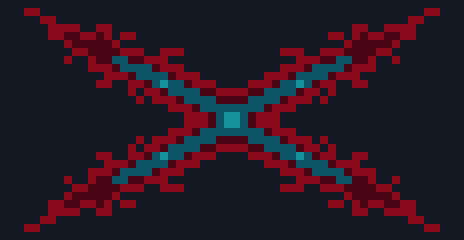
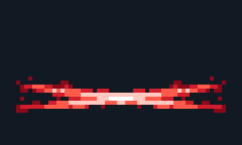
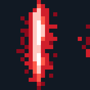

派克：16 张特效预览
100 毫秒/帧仅供预览，正式时长由技能动画决定。
pyke_fx_a_hit.png (4 帧)
1024×256 ·
pyke_fx_q_charge.png (4 帧)
768×192 · LR
pyke_fx_q_hook.png (4 帧)
1792×160 · TB
pyke_fx_q_hit.png (5 帧)
1440×288 ·
pyke_fx_q_stab_hit.png (4 帧)
1152×192 · TB
pyke_fx_w_cast.png (5 帧)
2400×288 · LR
pyke_fx_e_left.png (6 帧)
2688×288 · LR
pyke_fx_e_phantom.png (4 帧)
1664×224 · TB
pyke_fx_e_hit.png (5 帧)
1600×320 ·
pyke_fx_e_stun.png (4 帧)
1024×128 · LR
pyke_fx_q_slow.png (4 帧)
1152×128 · LR
pyke_fx_r_mark.png (6 帧)

5568×480 · LRTB
pyke_fx_r_strike.png (5 帧)

4800×576 · LR
pyke_fx_r_hit.png (5 帧)

1760×352 ·
pyke_fx_r_reset.png (6 帧)
2496×416 · LR
pyke_fx_p_heal.png (6 帧)
2304×544 · LR